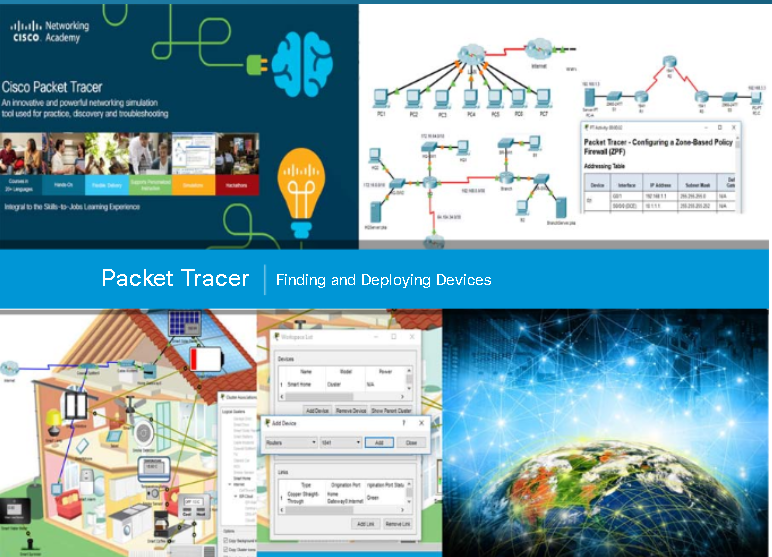
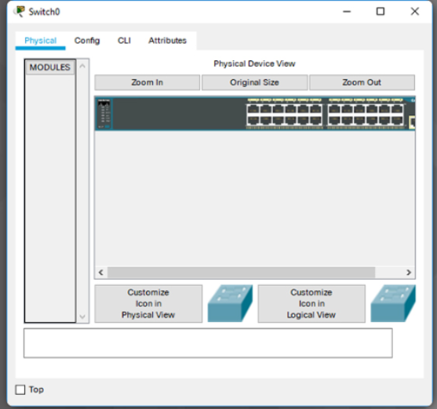
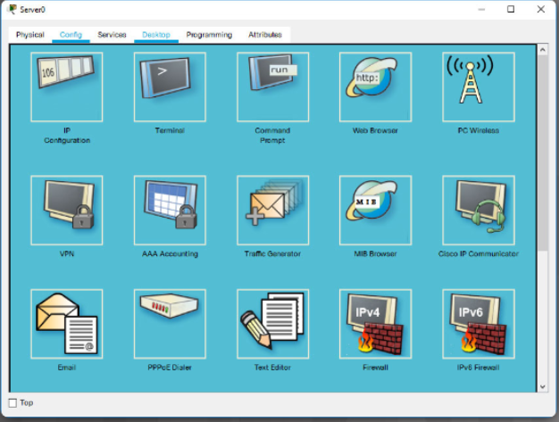
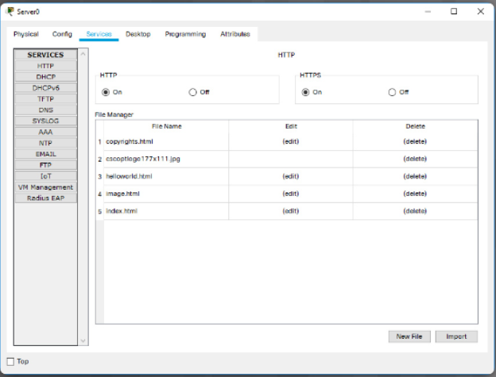

The User Interface.
This Chapter introduces the user interface and provides guidance on how to create a simple network using Packt Tracer.
Packet Tracer User Interface.
Packet Tracer is a tool that allows you to simulate real networks. It provides three main menus that allow you to:
- Add devices and connect them via cables or wireless.
- Select,delete, inspect, label and group components within your network.
- Manage your network.
- Open an existint/sample network
- Save your current network.
- Modify you user profile or your preferences.
The Open Samples command will display a directory of prebuilt examples of teatures and configurations of various network and Internet of Things devices includes within Packet Tracer.
The Exit and Logout command will remove the registration information for this copy of Packet Tracer and require the next user of this copy of Packet Traces to do the login procedure again.
Packet Tracer - finding and Devplying Devices.
Since Packet Tracer simulates networks and network traffic, the physical aspects of these networks also needs to be simulated. This includes actually finding and deploying physicals devices,
customizing those devices, and cabling those devices. After the physical deployment and cabling is done, then it is time for configuration of the interfaces used to connect the devices.
Finding a device to deploy requires looking in the Devices-Type Selection Box. The Device-Type Selection Box works on the concept of categories and sub-categories as shown in the figure.

The top row of icons represents the category list consisting of:
-
[Networking Devices]
[End Devices]
[Components]
[Connections]
[Miscellaneous]
[Multiuser]
Device Configuration
One your network has been created, it is time to configure the diveces and components. Packet Tracer has the capability to configure the different intermediate and device that make up your network. To access
the configuration interface of any devices first click on the device that you wish to configure. A popup windows will appear displaying a serires of tabs. Different types of devices have different interfaces.
Packet Tracer - GUI and CLI Configuration.
For intermediate devices such as routers and switches, there are two methods of configuration available. Devices can be configured or investigated via a Config tab (a GUI interface) or a command line interface (CLI)
(Figure 1).

The config tab does not exist in most physical equipment. This tab is a learning tab in Packet Tracer. If you don't know how to use the command line itnerface, this tab provides a way to 'fill in the blank'
to do basic configurations. It will show the equivalent CLI commands that would do the same things if using the Command Line Interface. The CLI interface requires knowledge of device configuration.
For some of the end devices, such as PCs and laptops, Packet Tracer provides a desktop interface that gives you accesss to IP configuration, wireless configuration,a command prompt, a Web borwser, and much more (Figure 2).

If you are configuring a server, the server has all of the functions of the Host with addition of one more tab, the services tab (Figure 3). This tab allows a server to be configured as a web server, a DHCP server, a DNS server or various
other servers visible in the graphic.

Config. End devices Instructions.